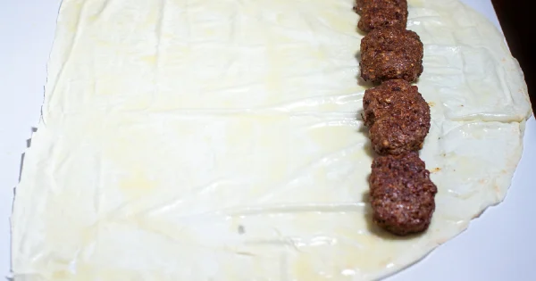

Ingredients
For Meat
- 400 gr ground beef
- one egg
- one clove of garlic
- one onion
- 100 gr breadcrumbs
- 1/4 tsp salt
- 1/4 tsp tsp black pepper
- 1/2 tsp chili pepper
For Sauce
- 200 gr tomato paste
- one tsp butter
- 1/4 tsp salt
- 1/4 tsp black pepper
Method
- Mix onion, egg and garlic in blender.
- Add the ground beef, breadcrumbs, black pepper, paprika, salt and the mixture in the blender to the mixing bowl.

- Knead the mixture .
- Lay baking paper on a baking tray and arrange the meatballs in a long and flat shape on the tray. Make sure the meatballs are not thick.
Bake the meatballs in a preheated oven at 190 degrees until they are golden brown.
- When the meatballs are cooked, roll out half the dough on the counter and spread melted butter on it.
- Arrange the cooked meatballs on the phyllo so that there are no spaces.

- Slice the roll obliquely.
- Spread butter on the phyllo and put it back in the oven. Meanwhile, start preparing the Beytini sauce. Melt the butter in a pan and add the tomato zest and boil for a few minutes.
- After adding black pepper and salt on it, take it off the stove.
- Take the fried beyti out of the oven, pour the sauce on them and serve with yoghurt. Enjoy your meal!